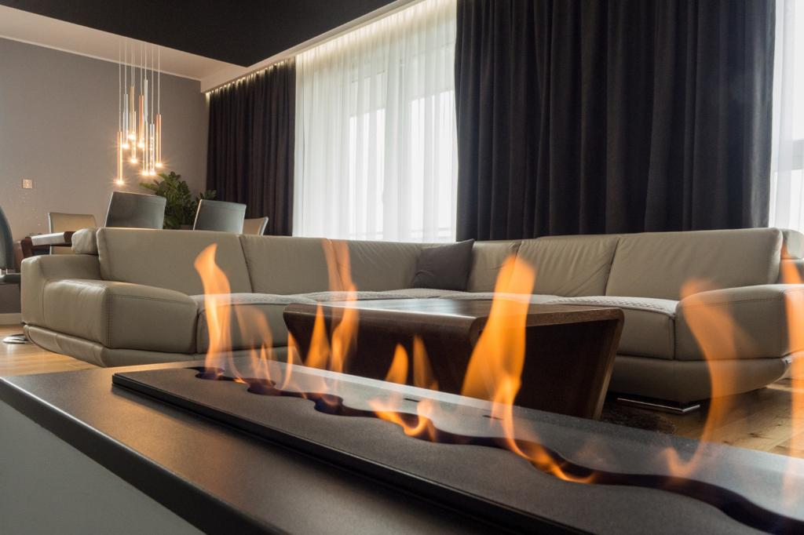
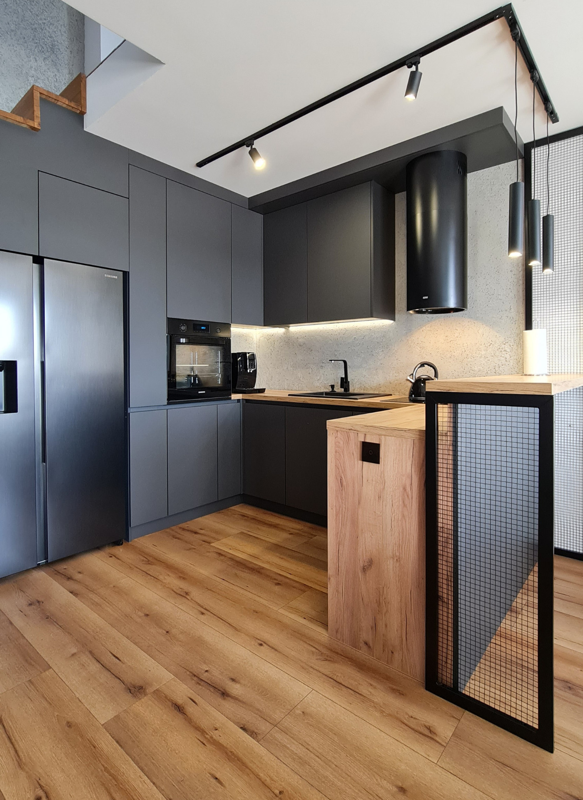
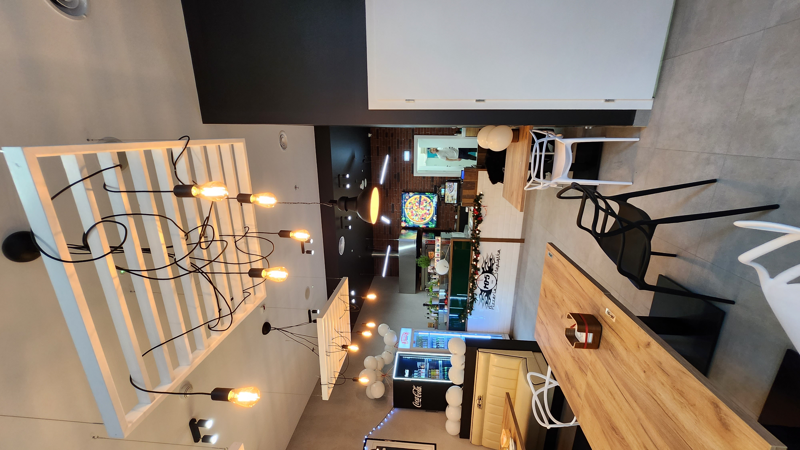
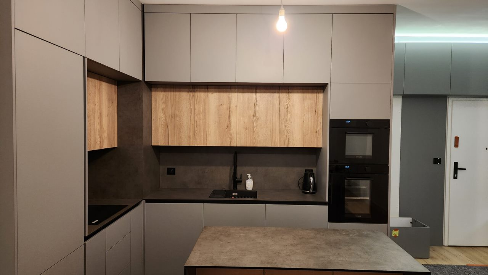
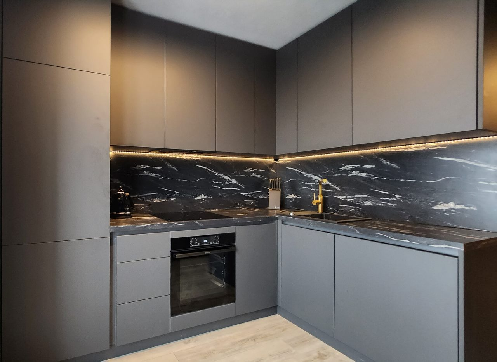
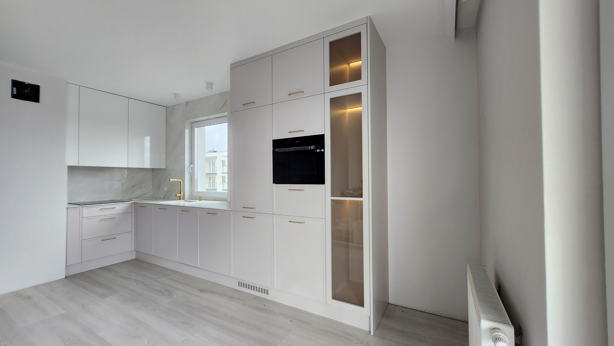
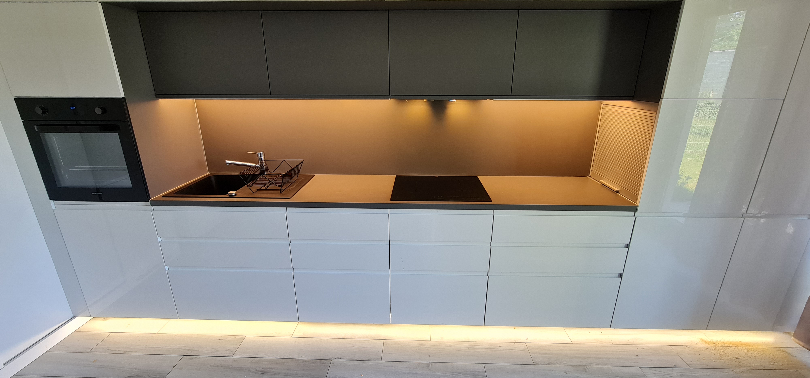
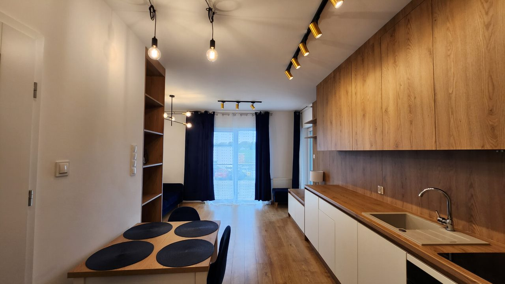
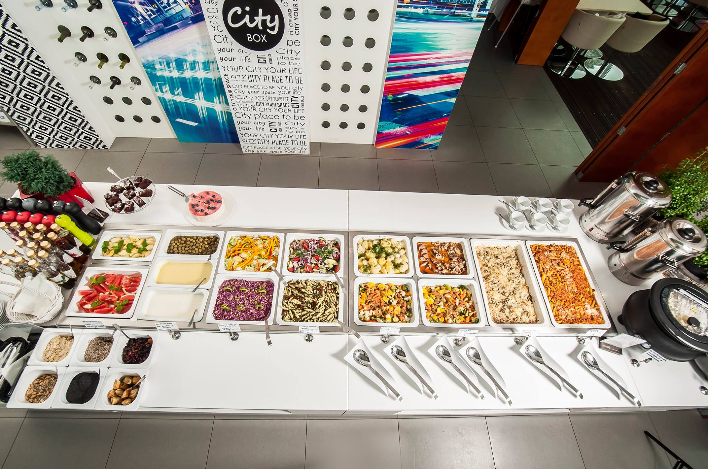
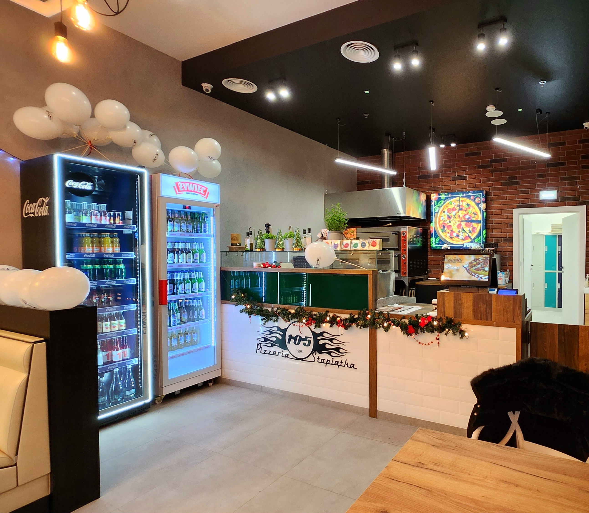

Wiosenna Kolekcja -15%
Zamów meble z nowej kolekcji wiosennej do końca maja i skorzystaj z wyjątkowego rabatu.
Szczegóły ofertyDarmowa Wizualizacja
Przy zamówieniu kompleksowego projektu wnętrza, wizualizacja 3D w prezencie!
Dowiedz się więcej
Zamów meble z nowej kolekcji wiosennej do końca maja i skorzystaj z wyjątkowego rabatu.
Szczegóły ofertyPrzy zamówieniu kompleksowego projektu wnętrza, wizualizacja 3D w prezencie!
Dowiedz się więcejMeta Studio Design to zespół profesjonalistów z ponad dziesięcioletnim doświadczeniem w projektowaniu wnętrz i produkcji mebli, który przez lata dostarczał wyjątkowe rozwiązania w Polsce i Europie Zachodniej. Dzięki wieloletniemu doświadczeniu, możemy zapewnić klientom najwyższą jakość usług, spełniając ich marzenia o unikalnych, funkcjonalnych przestrzeniach.
Specjalizujemy się w meblach pod zabudowę do domów, restauracji oraz obiektów użyteczności publicznej, oferując kompleksową obsługę, od koncepcji po realizację.
"Furniture is not just an object, it's part of your life."
Nasza filozofia opiera się na przekonaniu, że meble to nie tylko przedmioty, ale istotna część Twojego życia. Dlatego nasze projekty są tworzone z myślą o Twoich potrzebach, komforcie i stylu. Łączymy nowoczesne technologie z elegancją i funkcjonalnością, aby dostarczać rozwiązania, które w pełni odpowiadają Twoim oczekiwaniom.
Każdy projekt traktujemy indywidualnie, z pełnym zaangażowaniem i pasją. Oferujemy bezpłatne spotkanie online, podczas którego każdy klient może zobaczyć wizualizację swoich wymarzonych mebli oraz obejrzeć pomieszczenie w 3D.
Dzięki nowoczesnym technologiom meblarskim oraz dbałości o każdy detal, dostarczamy produkty najwyższej jakości, które zaskakują naszych klientów innowacyjnymi rozwiązaniami.










.jpg)



Wszechstronne materiały kompozytowe od czołowych europejskich producentów takich jak Pfleiderer, Swiss Krono, Kronospan i Egger. Oferujemy płyty laminowane z wysoką odpornością na zarysowania, wilgoć i wysoką temperaturę oraz płyty HDF o zwiększonej gęstości z gładką powierzchnią idealną do dalszej obróbki. Każda płyta gwarantuje stabilność wymiarową i długotrwałą funkcjonalność.
Płyty laminowane to wszechstronne materiały kompozytywne składające się z płyty nośnej (wiórowej lub MDF) pokrytej z obu stron dekoracyjnym laminatem melaminowym. Charakteryzują się wysoką odpornością na zarysowania, wilgoć i działanie wysokich temperatur.
Płyta pilśniowa o wysokiej gęstości, produkowana z włókien drzewnych sprasowanych pod bardzo wysokim ciśnieniem i w wysokiej temperaturze. Dzięki swojej zwartej strukturze jest znacznie twardsza i bardziej wytrzymała na zginanie niż standardowa płyta MDF.
Korzystamy z materiałów od czołowych europejskich producentów, którzy gwarantują najwyższą jakość i innowacyjność. Każdy producent oferuje unikalne kolekcje dekorów oraz najnowsze technologie w branży materiałów drewnopochodnych.

Elementy wykończeniowe szafek i mebli, które decydują o ich wyglądzie estetycznym i funkcjonalności. Oferujemy pełną gamę rozwiązań: fronty akrylowe z wyjątkową odpornością na uszkodzenia mechaniczne, lakierowane z możliwością pełnej personalizacji kolorów, fornirowane łączące piękno naturalnego drewna ze stabilnością, drewniane z litego drewna, szklane z ramkami aluminiowymi, gięte o zaokrąglonych krawędziach oraz frezowane z precyzyjnymi wzorami. Wszystkie fronty dostosowane do specyficznych wymagań każdego pomieszczenia.

Funkcjonalne powierzchnie robocze, które są również kluczowym elementem dekoracyjnym nadającym charakter całemu wnętrzu. Oferujemy blaty laminowane z wysokociśnieniowym laminatem HPL imitującym fakturę drewna, kamienia czy betonu, spieki kwarcowe o niezwykłej twardości składające się w 90-95% z naturalnych kwarcytów, artystyczne blaty z żywicy epoksydowej z nieograniczonymi możliwościami personalizacji, blaty drewniane z litego drewna tworzące ciepłą atmosferę, luksusowe blaty kamienne z granitu i marmuru oraz innowacyjne blaty Solid Surface umożliwiające bezspoinowe połączenia. Każdy materiał gwarantuje trwałość, łatwość utrzymania i wyjątkowy efekt wizualny.
Płyta MDF pokryta wysokiej jakości matą akrylową (o grubości ok. 0,7-1mm) z jednej strony i matą przeciwprężną z drugiej. Powłoka akrylowa zapewnia wyjątkową odporność na uszkodzenia mechaniczne, zarysowania i promieniowanie UV.
Wykonywane z płyty MDF pokrytej kilkoma warstwami lakieru poliuretanowego. Płyta jest najpierw wyszlifowana, oczyszczona, pokryta lakierem podkładowym, a następnie lakierem nawierzchniowym.
Idealne połączenie autentycznego piękna naturalnego drewna z funkcjonalnością i stabilnością nowoczesnych płyt meblowych. Składają się z płyty nośnej oklejanej cienką warstwą prawdziwego drewna (fornir 0,6-3mm).
Masywne fronty z naturalnego drewna wykonywane według indywidualnych potrzeb klienta. Każdy gatunek drewna ma unikalne właściwości i charakterystyczny wygląd, tworząc niepowtarzalne meble o naturalnym charakterze.
Ramki aluminiowe z wstawkami ze szkła. Nowoczesne rozwiązanie umożliwiające personalizację poprzez różne rodzaje szkła i grafik. Idealne do tworzenia nowoczesnych, minimalistycznych wnętrz.
Fronty o zaokrąglonych krawędziach lub powierzchniach nadające meblom miękki, elegancki wygląd. Wykonywane metodą gięcia na gorąco z różnych materiałów w zależności od wymagań projektu.
Fronty z precyzyjnie wykonanymi frezami tworzącymi dekoracyjne wzory, rączki lub uchwyty zintegrowane z powierzchnią frontu. Dostępne w dwóch głównych wariantach: laminowane i lakierowane.
Płyta MDF z precyzyjnie wyfrezowanymi wzorami pokryta laminatem wysokociśnieniowym. Łączą estetykę wzorów klasycznych z praktyczną odpornością laminatu na intensywne użytkowanie.
Płyta MDF z wyfrezowanymi wzorami pokryta wielowarstwowym lakierem poliuretanowym. Oferują najwyższą jakość estetyczną i możliwość dowolnej kolorystyki z palet RAL i NCS.
Dekoracyjne elementy naklejane na płytę MDF tworzące efekty przestrzenne i klasyczne wzornictwo. Idealne do tworzenia stylowych mebli w stylu klasycznym, prowansalskim, angielskim i pałacowym.
Ręczne obrazy na frontach - unikalna oferta manufaktury artystycznej na dużych powierzchniach. Połączenie tradycyjnych technik malarskich z nowoczesnymi metodami nadruku i precyzyjnym frezowaniem CNC, tworząc niepowtarzalne dzieła sztuki funkcjonalnej.
Funkcjonalne powierzchnie robocze, które są również kluczowym elementem dekoracyjnym nadającym charakter całemu wnętrzu. Oferujemy blaty laminowane z wysokociśnieniowym laminatem HPL imitującym fakturę drewna, kamienia czy betonu, spieki kwarcowe o niezwykłej twardości składające się w 90-95% z naturalnych kwarcytów, artystyczne blaty z żywicy epoksydowej z nieograniczonymi możliwościami personalizacji, blaty drewniane z litego drewna tworzące ciepłą atmosferę, luksusowe blaty kamienne z granitu i marmuru oraz innowacyjne blaty Solid Surface umożliwiające bezspoinowe połączenia. Każdy materiał gwarantuje trwałość, łatwość utrzymania i wyjątkowy efekt wizualny.
Wykonywane z płyty meblowej (np. MDF, płyta wiórowa) pokrytej laminatem wysokociśnieniowym (HPL). Nowoczesne laminaty imitują niemal perfekcyjnie fakturę i wzór drewna, kamienia czy betonu, oferując przy tym znakomitą odporność na ścieranie, plamy i wysoką temperaturę.
Nowoczesne spieki kwarcowe powstają w ok. 90-95% z naturalnych, zmielonych kwarcytów i kwarcu, połączonych żywicami. Są niezwykle twarde, odporne na zarysowania, plamy, kwasy i wysoką temperaturę. Nie wymagają konserwacji.
Korzystamy z materiałów od światowych liderów:
Pionier i jeden z najpopularniejszych producentów spieków kwarcowych na świecie. Cosentino oferuje szeroką gamę kolorów i wzorów, od klasycznych po najbardziej awangardowe.
Znany z szerokiej gamy kolorów i wzorów. Caesarstone łączy najwyższą jakość z innowacyjnymi rozwiązaniami technologicznymi.
Hiszpański producent oferujący innowacyjne rozwiązania w dziedzinie spieków kwarcowych, znany z nowoczesnych technologii produkcji.
Łączy technologie Samsunga z wytrzymałością spieków kwarcowych. Innowacyjne podejście do produkcji materiałów powierzchniowych.
Powstają poprzez zalanie podkładu (np. z drewna, MDF) żywicą epoksydową. Dają nieograniczone możliwości personalizacji. Grubość jest w pełni personalizowana i zależy od projektu – od cienkiej powłoki po masywne blaty o grubości 50mm i więcej.
Wykonane z litego drewna (dąb, jesion, orzech, buk) lub klejonych warstwowo desek. Tworzą niepowtarzalną, naturalną i ciepłą atmosferę. Z czasem mogą nabrać patyny, co dodaje im charakteru. Wymagają okresowej konserwacji (olejowania).
Luksusowy, naturalny i niepowtarzalny materiał. Każdy blat jest unikatem. Granit jest bardzo twardy i odporny, podczas gdy marmur jest bardziej miękki i podatny na zarysowania oraz działanie kwasów (np. soku z cytryny), wymaga impregnacji.
Innowacyjny materiał kompozytowy składający się w około 2/3 z naturalnych minerałów i w 1/3 z żywicy akrylowej. Jego największą zaletą jest bezspoinowość – połączenia są niewidoczne, tworząc jednolitą, monolityczną powierzchnię.
Najważniejsi producenci materiałów solid surface:
Pionier i lider w dziedzinie solid surface. Corian oferuje najszerszą gamę kolorów i wzorów, od jednolitych po imitujące naturalne materiały. Znany z najwyższej jakości i innowacyjności.
Nowoczesny producent oferujący materiały solid surface o wysokiej jakości. Hi-Macs charakteryzuje się doskonałymi właściwościami technicznymi i szeroką gamą wzorów.
Materiał solid surface od Samsunga, łączący technologię z estetyką. Staron oferuje materiały o wyjątkowych właściwościach estetycznych i funkcjonalnych.
W MetaStudio wierzymy, że piękno wnętrza powinno iść w parze z pięknem serca.
Dlatego 7% wartości każdego zamówienia przekazujemy na rzecz W🌍rldFoundation.

Minimalistyczna elegancja dla nowoczesnych wnętrz.

Ponadczasowe wzornictwo w luksusowym wydaniu.

Wyjątkowe projekty tworzone na indywidualne zamówienie.
Skontaktuj się z nami, aby dowiedzieć się więcej o naszych usługach:
Email: kontakt@metastudio.pl
Telefon: +48 123 456 789
Opis projektu
Opis projektu
Lokalizacja